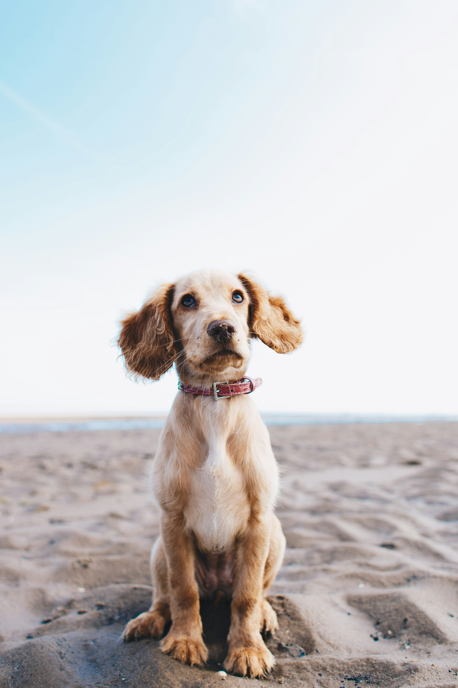
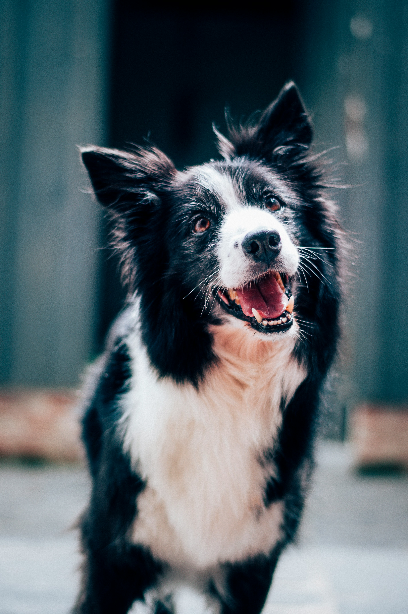
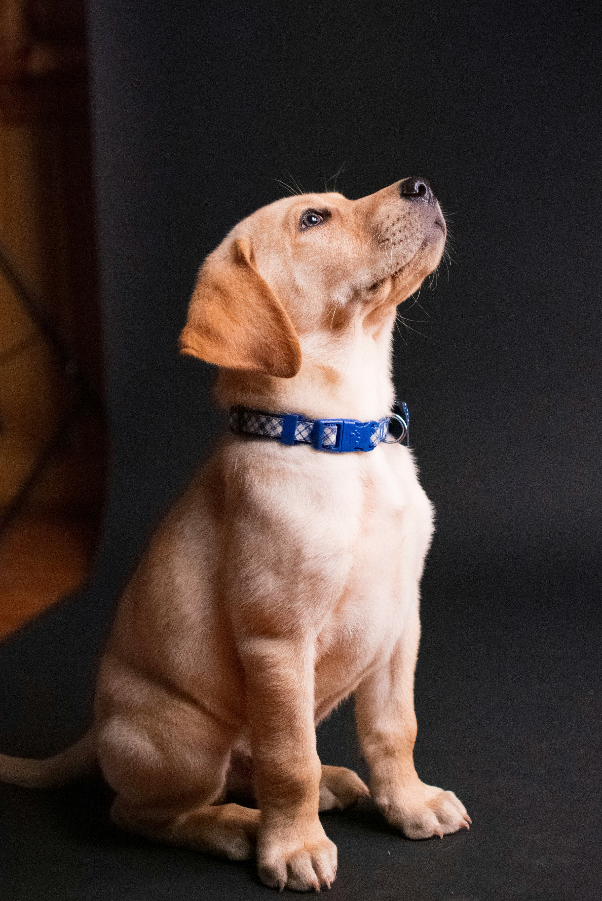
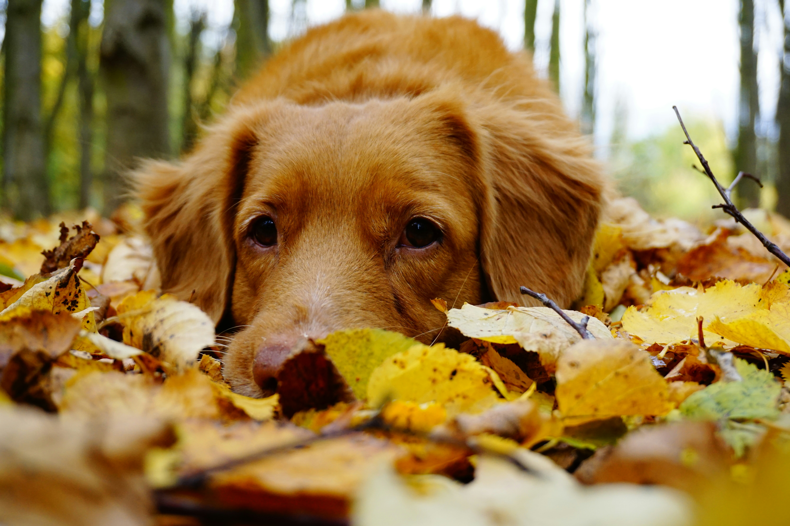

Skaatfjellets Molo
Korthåra vorsteh
Aktiv, arbeidsvillig og sosial med stor jaktglede og eit roleg temperament heime.
LES MEIR->KORTHÅRA VORSTEH
Oppdrett av korthåra vorsteh med omsorg, jaktglede og lidenskap!
LES MEIR OM OSSKORTHÅRA VORSTEH
Er du på jakt etter en lojal, aktiv og allsidig følgesvenn? Korthåra vorsteh er ein energisk og arbeidsvillig hund som passar godt for mennesker med ein aktiv livsstil.
Med sin styrke, intelligens og store arbeidslyst er rasen ein fantastisk jaktkamerat, samtidig som den knyt sterke band til familien sin.
Hos Kennel Skaatfjellet ynskjer me å avle fram sunne, balanserte og kjærlege hundar som fungerar både på jakt og heime.
MØT HUNDANE VÅRE ->
VÅRE HUNDAR
Hundane våre er ein viktig del av både familien, jakta og arbeidet vårt med rasen.

Korthåra vorsteh
Aktiv, arbeidsvillig og sosial med stor jaktglede og eit roleg temperament heime.
LES MEIR->
Korthåra vorsteh
Ein sterk og samarbeidsvillig hund med godt uthald og fine egenskaper på jakt.
LES MEIR->
Korthåra vorsteh
Tillitsfull, energisk og lærevillig med stor personligheit og gode jaktegenskaper.
LES MEIR->
KENNEL SKAATFJELLET
Kennel Skaatfjellet vert drive av stor kjærleik til korthåra vorsteh, jakt og eit aktivt liv saman med hund.
For oss handlar godt oppdrett om meir enn utsjånad. Me legg stor vekt på helse, mentalitet, bruksegenskaper og eit godt familietemperament.
Kvalpane våre veks opp med nærleik, aktivitet og gode erfaringer før dei flyttar videre til sine nye familiar.
LES MER OM KENNELENHundar for
PLANLAGTE KULL
Me planlegg kull med fokus på gode kombinasjonar av helse, mentalitet, jaktinstinkt og familietemperament.
Dersom du er interessert i en kvalp frå Kennel Skaatfjellet, er du hjarteleg velkommen til å ta kontakt med oss.
TA KONTAKTKONTAKT
Har du spørsmål om hundane våre, rasen eller planlagte kull?
kennel@skaatfjellet.no
+47 000 00 000
Instagram
Facebook